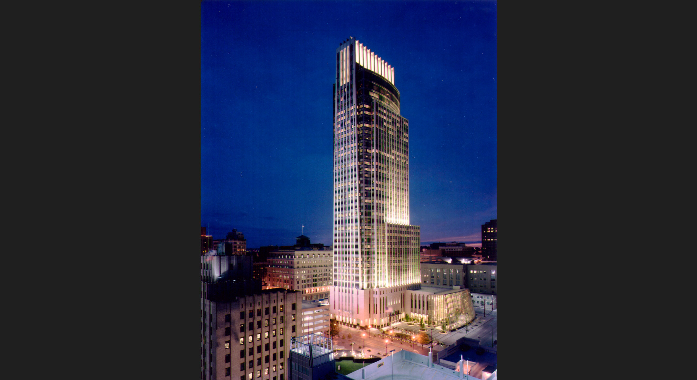
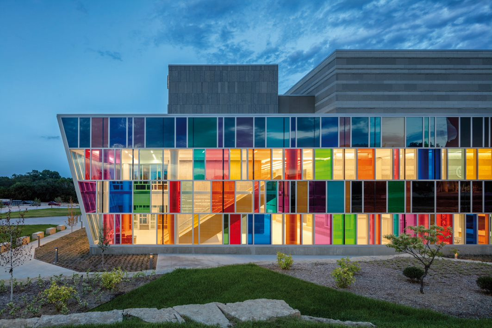

Here's a brief overview of my experience within the IT industry and with my schooling so far.
I've worked at an architecture and engineering firm called Leo A Daly for over three and a half years as an intern. I helped support colleagues who built beautifully designed buildings like these.
 I started out at Metropolitan Community College after graduating from Millard North High School. I swaitched majors from psychology, to geology, and finally to information technology. I though that IT was the best way for me to combine my desire to help people and to constantly learn new things.
In the future, I hope to be a web developer. After I learn new skills, I want to work on a couple of projects that I've had in mind. These project ideas are the result of me using apps and wishing there were some additional features I wish were included.